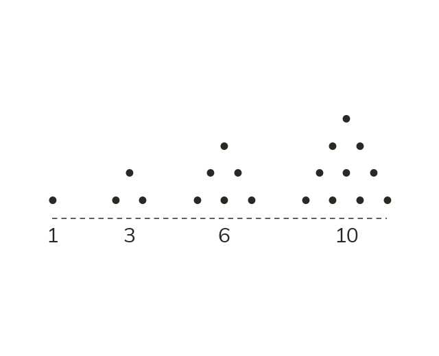
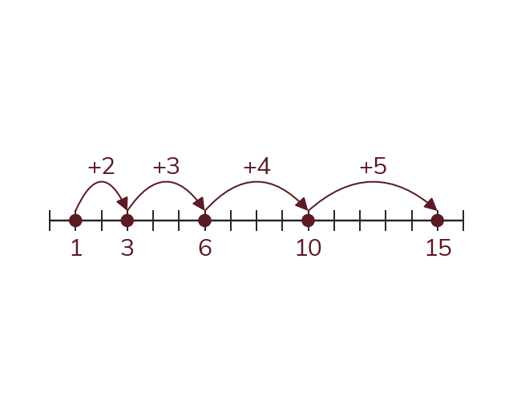
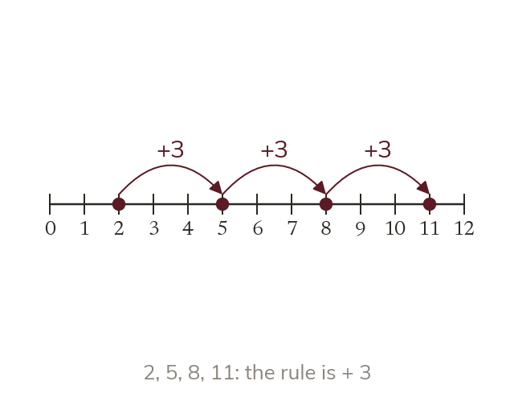
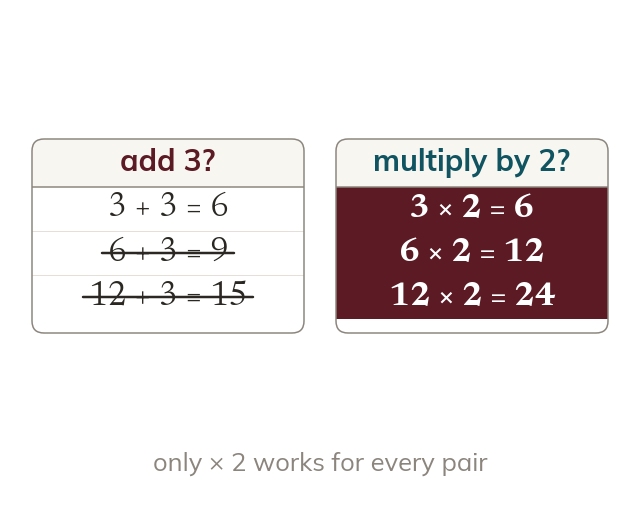

Dot patterns, tiles and staircases grow by rules, and once you spot the rule you can predict the next stage without drawing it. Today you'll meet the triangular numbers, then learn to follow and to find the rule behind a sequence.
By the end you’ll know…
A sequence is a list of numbers, called terms, that follows a rule, and each term has a position: 1st, 2nd, 3rd and so on.
A term-to-term rule says how to get from each term to the next, such as 'add 3' or 'multiply by 2', and it is applied to the term before, not to the position.
The triangular numbers 1, 3, 6, 10, 15, ... count the dots in triangle patterns: each new triangle adds a row one dot longer than the last.
So each triangular number is a running total of the counting numbers (10 = 1 + 2 + 3 + 4), and the gaps between them grow by one: +2, +3, +4, +5.
By the end you can
G2Generate the triangular numbers from dot patterns, continue the sequence, and recognise whether a number is triangular.
G2Generate terms of a sequence from a term-to-term rule, and find and describe the term-to-term rule of a sequence to continue it.
Work down the page at your own pace. Write every answer in your book first, then click to check it.
01
Do Now
About 5 minutes
1
Starting at 45, count back in steps of 5 and write the next four numbers.
40, 35, 30, 25.
2
How many more than 6 is 18, and how many times the size of 6 is it?
18 - 6 = 12 more 18 ÷ 6 = 3 times the size.
3
List the first five multiples of 4.
4, 8, 12, 16, 20.
Remember these?
LAST LESSONWrite 56 as a product of its prime factors in index form.
56 = 2 × 2 × 2 × 7 = 2³ × 7.
LAST WEEKIs 471 divisible by 3? Show how you know.
4 + 7 + 1 = 12, a multiple of 3, so yes.
LAST TERMFind 35of 40.
40 ÷ 5 = 8 8 × 3 = 24.
LAST YEARHow many grams are in 2.5 kg?
2.5 × 1000 = 2500 g.
02
Learn
Read each card, then follow the worked examples one step at a time.

Triangular numbers
The triangular numbers 1, 3, 6, 10, 15 count dots in triangles. Each new triangle adds a row one dot longer.
The triangular numbers, 1, 3, 6, 10, 15 and so on, count the dots in triangle patterns. Each new triangle adds a row one dot longer than the row before.

Running totals
Running totals give them: 1 + 2 + 3 + 4 = 10. The gaps grow by one each time.
Each triangular number is a running total of the counting numbers, so 1 + 2 + 3 + 4 = 10 is the fourth one. The gaps between them grow by one each time.
WORKED EXAMPLE A
Find the next triangular number after 15. 15 is the 5th triangular number. Each new triangle adds a row one dot longer than the last, so the 6th adds a row of 6 dots.
Add a row of 615 + 6 = 21
WORKED EXAMPLE B
Is 36 a triangular number?
Add 7 to the 6th21 + 7 = 28
Add a row of 828 + 8 = 36
Is 36 triangularyes, the 8th
YOUR TURN · a
The 9th triangular number is 45. Find the 10th and the 11th. (Hint: the 10th triangle adds a row of 10 dots.)
10th: 45 + 10 = 55. 11th: 55 + 11 = 66.
YOUR TURN · b
Is 50 a triangular number? Explain how you know.
45 + 10 = 55, so 50 falls between the 9th and the 10th triangular numbers, 45 and 55: it is not triangular.
03
Check your understanding
Pick an answer. If it's wrong, the feedback tells you which mistake it was.
Which list shows the first five triangular numbers?
Not quite. Those are odd numbers. Triangular numbers add one more each time: 1, 3, 6, 10, 15.
Yes. Add 2, then 3, then 4, then 5: 1, 3, 6, 10, 15.
Not quite. Those are square numbers. Triangular: 1, 3, 6, 10, 15.
Not quite. Count every dot, not just the new row: 1, 3, 6, 10, 15.
The 11th triangular number is 66. What is the 12th?
Not quite. The gap grows by one each time: add 12, not 11. 66 + 12 = 78.
Not quite.12 is the new row. Add it on: 66 + 12 = 78.
Yes. The 12th triangle adds a row of 12: 66 + 12 = 78.
Not quite.144 is 12 × 12, a square number. 66 + 12 = 78.
Which of these is a triangular number?
Not quite.16 is a square number (4 × 4). The triangular numbers go 15, 21, 28.
Not quite. The gaps grow: after 15, add 6 to get 21. 20 is skipped.
Not quite.9 is a square number. Triangular: 6, 10, 15, 21, 28.
Yes.1, 3, 6, 10, 15, 21, 28: yes.
04
Practise
mark as you go
Checkpoint. Write down the first seven triangular numbers. Then decide whether 80 is a triangular number, and explain how you know. Show your working - I'll check it before you move on.Show your teacher before you go on
Given that the 13th triangular number is 91, find the 14th.
91 + 14 = 105
3
Continue 105, 120, … for two more terms.
120 + 16 = 136 136 + 17 = 153
4
Is 100 a triangular number?
No: it lies between 91 and 105
5
Which are triangular: 6, 12, 15, 25?
6 and 15
EXT
Given that the 20th triangular number is 210, find the 19th and the 21st.
210 - 20 = 190 210 + 21 = 231
05
Learn
Read each card, then follow the worked examples one step at a time.

Term-to-term rules
A term-to-term rule gets from each term to the next. It works on the term before, never the position.
A term-to-term rule tells you how to get from each term of a sequence to the next. It always works on the term before, never on the term's position.

Finding the rule
The same change must work for every pair of neighbours. It can add, subtract, multiply or divide.
A rule is only found once the same change works for every pair of neighbouring terms, not just the first pair. The change can be adding, subtracting, multiplying or dividing.
WORKED EXAMPLE C
Starting at 50 with the rule 'subtract 7', find the next three terms.
Subtract 750 - 7 = 43
Subtract 743 - 7 = 36
Subtract 736 - 7 = 29
Next three terms43, 36, 29
WORKED EXAMPLE D
Find the rule and the next term of 2, 6, 18, 54, …
Test add 46 + 4 = 10, not 18
Test multiply by 32 × 3 = 6
6 × 3 = 18
Rulemultiply by 3
Next term54 × 3 = 162
YOUR TURN · c
A sequence starts at 7 and its rule is 'add 6'. Write the first five terms.
7, 13, 19, 25, 31.
YOUR TURN · d
Find the rule and the next two terms of 96, 48, 24, 12, …
Each term is half the one before, so the rule is 'divide by 2'. Next two terms: 12 ÷ 2 = 6, 6 ÷ 2 = 3.
06
Check your understanding
Pick an answer. If it's wrong, the feedback tells you which mistake it was.
What does a term-to-term rule tell you?
Not quite. That's a position-to-term rule. Term-to-term goes from one term to the next.
Not quite. Check every gap, not just the first.
Yes. It tells you how to get the next term from the one before.
Not quite. Not every rule adds the same amount. It could multiply.
A sequence starts at 2 and its rule is 'multiply by 5'. What is the 3rd term?
Yes.2, then 2 × 5 = 10, then 10 × 5 = 50.
Not quite. Multiply the previous term, not the position: 2, 10, 50.
Not quite.10 is the 2nd term. One more × 5: 50.
Not quite. Multiply by 5, don't add 5: 2, 10, 50.
What is the next term of 5, 10, 20, 40, …?
Not quite. Check every gap: 5, 10, 20, 40 doubles each time. 80.
Yes. Each term doubles: 40 × 2 = 80.
Not quite. The gaps double too. 40 × 2 = 80.
Not quite.5 is the position. The value is 40 × 2 = 80.
07
Practise
mark as you go
Checkpoint. A sequence starts at 6 and its rule is 'add 5'. Write its first five terms. Then find the rule of 7, 14, 28, 56, … and use it to find the next two terms. Show your working - I'll check it before you move on.Show your teacher before you go on
1
The first term is 9 and the rule is 'add 4'. Write the first five terms.
9, 13, 17, 21, 25
2
The first term is 100 and the rule is 'subtract 8'. Write the first four terms.
100, 92, 84, 76
3
The first term is 3 and the rule is 'multiply by 4'. Write the first four terms.
3, 12, 48, 192
4
Find the rule and the next two terms of 243, 81, 27, 9, …
Rule: divide by 3 9 ÷ 3 = 3 3 ÷ 3 = 1
5
Find the rule and the next term of 4, 8, 16, 32, …
Rule: multiply by 2, not add 4 32 × 2 = 64
6
Find the missing terms in 4, ?, 16, ?, 28.
Rule: add 6 4, 10, 16, 22, 28
EXT
The first term is 3 and the rule is 'multiply by 2, then subtract 1'. Find the next three terms.
3 × 2 - 1 = 5 5 × 2 - 1 = 9 9 × 2 - 1 = 17
08
Exit ticket
On paper, on your own, then check
1
Explain how each triangular number is made from the one before, and say what a term-to-term rule is.
Each new dot triangle adds a row one dot longer than the last, so the gaps go +2, +3, +4 and so on. A term-to-term rule tells you how to get from each term to the next.
2
Given that the 24th triangular number is 300, find the 25th and the 26th.
300 + 25 = 325 325 + 26 = 351
3
Find the term-to-term rule of 60, 51, 42, 33, … and the next two terms.
Each term is 9 less than the one before, so the rule is 'subtract 9' 33 - 9 = 24 24 - 9 = 15
Finished? Next lesson: 7.2.1 Introducing Sets.
Practise more
After the lesson, or whenever you want more
Dr Frost
Log in, then search for a code to practise that skill.
202aIdentify named sequences such as square numbers, cube numbers, triangular numbers and the Fibonacci sequence.
203eGenerate an arithmetic sequence given the first term and the common difference.